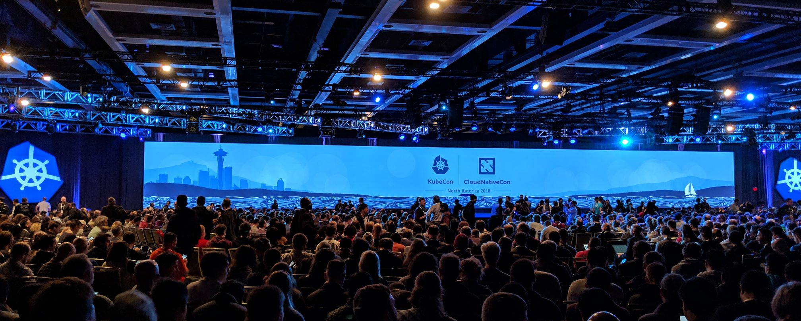

Parallel tests in Go
Oct 8, 2019
A great feature of Go is the ability to run tests in parallel using the default testing package.
KubeCon & CloudNativeCon - North America '18
Dec 30, 2018
With a grand total of 8000 attendees, 150+ speakers, 250+ talks, 100+ sponsors and more swag than I've ever seen at a conference, this was an event not to be missed.
Remote Cohesion
Nov 30, 2018
I've been working partially remote for the last 3 years and although at times it's been challenging, it's mostly been a success.
Kubernetes: Migrating legacy services
Oct 31, 2018
Firstly, let me explain what I mean by a legacy service: code that has never run on a container orchestration platform. The chances are your services were designed to run independently, on a node with plenty of resources, without being constantly restarted.
Kubernetes: Canary release
May 11, 2018
Kubernetes makes light work of giving us the ability to deploy a canary release.
Kubernetes: Service ports
Apr 5, 2018
Recently, I've been creating a lot of both internal and internet-facing LoadBalancer Services as this is a great way to expose your cluster to traffic. When doing this on AWS, unless specified otherwise, Kubernetes will automatically create a Classic Load Balancer and attach the relevant instances.
Manage channel operations using context
May 5, 2017
I was recently working on a small personal project when I came across a problem during some testing. I had written an application that starts a HTTP server, accepts requests, and serves content from an in-memory data store.